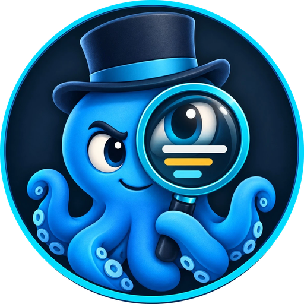
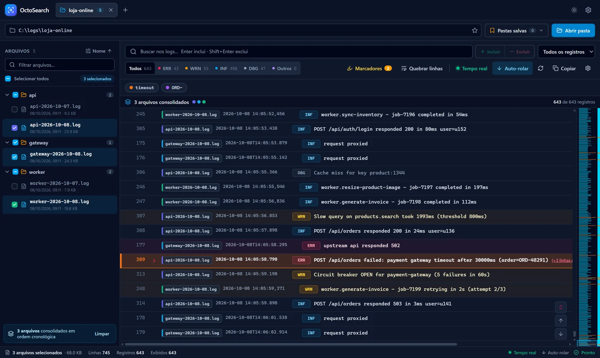
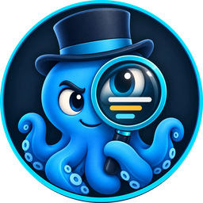

O OctoSearch é um visualizador de logs para qualquer aplicação — APIs, serviços, servidores, jobs. Abra pastas inteiras, filtre por nível, pesquise com inclusão e exclusão de termos e acompanhe arquivos em tempo real — tudo offline, no seu computador.


Feito para quem passa o dia caçando erros em arquivos .log e .txt — de qualquer linguagem, framework ou servidor.
Enter inclui um termo, Shift+Enter exclui. Combine vários filtros e esconda o ruído na hora.
Veja só ERR, WRN, INF ou DBG com um clique. A stack trace acompanha cada registro.
Selecione vários logs e veja tudo mesclado em ordem cronológica, cada origem com sua cor.
Abra uma pasta e o OctoSearch encontra os logs nas subpastas. Salve suas pastas favoritas em abas.
Crie regras que destacam linhas por texto — IDs de pedido, usuários, endpoints críticos.
Renderização virtualizada, auto-rolagem que acompanha a última linha e modo claro/escuro.
Sem cadastro, sem servidor, sem enviar seus logs para lugar nenhum.
Clique em “Baixar para Windows” e execute o arquivo OctoSearch-Setup.
Aponte para a pasta de logs da sua aplicação — local ou de rede.
Use a busca, os níveis e os marcadores para chegar na causa do problema.
Versão 1.0.0 para Windows 64 bits · 113 MB
Requisitos: Windows 10 ou 11 (64 bits). Se o Windows SmartScreen exibir um aviso, clique em “Mais informações” → “Executar assim mesmo”.

Sim. Você pode baixar e usar sem custo.
Não. O aplicativo roda 100% no seu computador e lê os arquivos diretamente do disco.
Arquivos .log e .txt, incluindo arquivos rotacionados como app.log.1. Data, hora e nível (ERROR, WARN, INFO, DEBUG…) são reconhecidos automaticamente nos formatos mais comuns, inclusive logs em JSON. Arquivos em outros formatos são exibidos linha a linha, com busca e filtros normalmente.
Sim. A varredura é assíncrona e percorre subpastas sem travar a janela.
O instalador ainda não tem assinatura digital, então o SmartScreen pode alertar na primeira execução. Clique em “Mais informações” e depois em “Executar assim mesmo”.